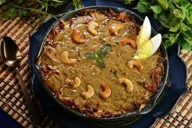

Haleem is a rich and flavorful stew made with wheat, lentils, and meat, slow-cooked to a creamy consistency. It is a popular dish in Hyderabad, especially during the month of Ramadan, and has its roots in the Middle Eastern and Mughlai culinary traditions. In Hyderabad, haleem has become synonymous with celebration and is a cherished dish known for its nourishing and hearty nature.
Meat and Wheat or cracked wheat
Lentils and Ghee
Spices and Ginger-garlic paste
Fried onions and Green chilies
Lemon juice and Garam masala
Fresh coriander leaves and mint
The meat is pressure-cooked or slow-cooked with spices, ginger-garlic paste, and water until it becomes tender and can be easily shredded. Bones are usually removed, but marrow is kept for added richness. The wheat and lentils are cooked separately with water until they soften. They are then mashed or blended into a smooth, thick paste. The cooked meat and the mashed wheat-lentil mixture are combined in a large pot. Ghee is added along with additional spices, fried onions, and green chilies. The mixture is slow-cooked, constantly stirred, to achieve a smooth, creamy consistency. The dish is garnished with fresh coriander, mint leaves, and fried onions. A squeeze of lemon juice adds brightness. Haleem is usually served with: Fried onions: Crispy onions on top for sweetness and texture. Coriander and mint leaves: For freshness. Lemon wedges: To add a tangy contrast. Ghee or butter: Sometimes added just before serving to make it even more decadent.